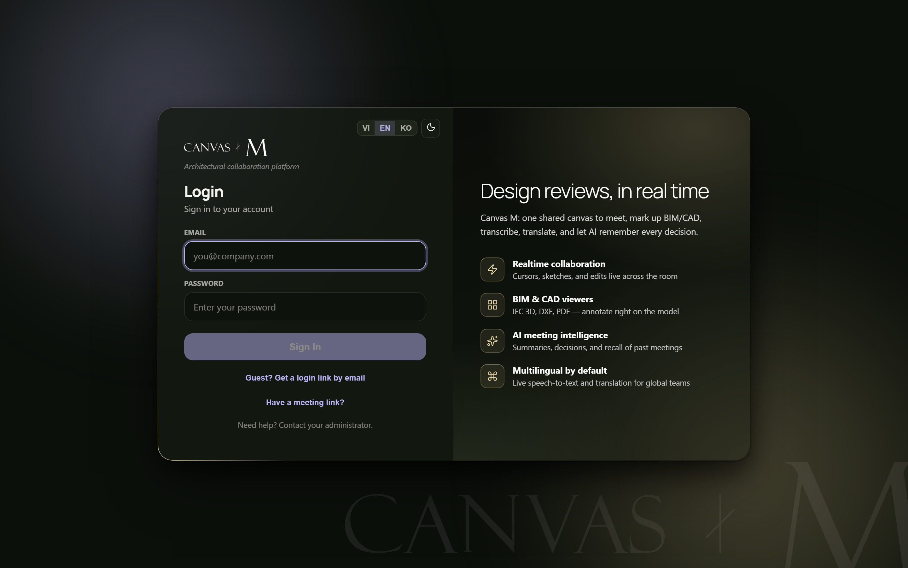

Signing in
Every visit to Canvas M starts at the same door. This chapter walks through the three ways in — an email and password, a one-time link by email, or a meeting invite — plus the language and theme controls that live on the card, and the exact words the screen shows when something goes wrong.

- 1 The Canvas M wordmark. On first arrival it plays a brief cinematic reveal centre-screen, then dissolves to hand off to the card. If your device is set to reduce motion, the intro is skipped and the card appears at once.
- 2 The language and theme switcher (VI / EN / KO and a light/dark toggle), tucked into the top bar of the form pane.
- 3 The strapline “Architectural collaboration platform”, the Login heading, and the subtitle “Sign in to your account”.
- 4 The sign-in form. By default this is the email and password form; two link buttons below it switch to the other two ways in.
- 5 The brand panel on the right — “Design reviews, in real time” — listing what waits inside: realtime collaboration, BIM & CAD viewers, AI meeting intelligence, and multilingual support. It is decorative; there is nothing to click here.
- 6 At the foot of the form: “Need help? Contact your administrator.”
Sign in with email and password
- In the Email field, type your work address — the placeholder shows the expected shape, you@company.com.
- In the Password field, type your password. The characters stay hidden.
- Click Sign In. While it works, the button reads Signing in… and is disabled so you can't submit twice.
- On success the card simply disappears and your project home opens.
→ You land signed in, ready to open or join a project.
The Sign In button stays greyed out until both the email and password fields have something in them. If the email isn't a plausible address (no @ or no domain), you'll see “That email looks invalid.” before any sign-in is even attempted.
Pick the form that fits you
The default. Email + Password, then Sign In. Two links sit underneath to switch to the other two modes.
For guests with no password. Enter just your Email, click Send login link, and Canvas M emails you a one-time link to click.
For when someone sent you an invite. Paste the link or ID,KEY, click Continue, then sign in — you'll be carried straight into that meeting.
Staff use Password; outside guests use the Login link; anyone holding an invite can start from Meeting link. You can switch between them freely — the links below each form toggle modes and clear any error as they do.
Get a one-time login link by email
- On the password form, click Guest? Get a login link by email.
- Type your Email. (No password field appears — this way in doesn't use one.)
- Click Send login link; while it sends, the button reads Signing in….
- Read the confirmation: “Login link sent to [your email]. Open the email to join.”
- Switch to your inbox and click the link in the email Canvas M just sent.
- To go back without sending, click ← Sign in with a password.
→ Clicking the emailed link returns you to Canvas M already signed in — no password required.
The link is one-time and tied to that email address. If it doesn't arrive within a minute, check spam, then send it again. If you originally arrived from a meeting invite, the link still carries you into that meeting once you return.
Start from a meeting link
- On the password form, click Have a meeting link?.
- Paste your invite into the Meeting link field — a full link, a #room=… fragment, or a bare ID,KEY all work; the placeholder reads “Paste meeting link or ID,KEY”.
- Click Continue. The button is disabled until the field has text.
- Canvas M saves the meeting and confirms: “Meeting link saved — sign in to join.”, then returns you to the password form.
- Sign in with your password (or switch to the guest link). Once you're in, Canvas M joins the saved meeting automatically.
→ You are dropped straight into the meeting the invite pointed at, no extra navigation.
Pasting a meeting link does not skip signing in — it only remembers where you're headed. Everyone signs in first. If what you paste isn't a recognisable link, you'll see “That meeting link looks invalid.”
Set the language and theme
The login card carries the same compact control you'll see throughout the app, sitting in the top bar of the form pane — so you can pick the language and the light or dark look before you've even signed in.
Language. Three segments — VI, EN, and KO — switch the whole interface between Vietnamese, English, and Korean. The active one is highlighted. The choice applies immediately and is remembered on this device for next time.
Theme. The sun / moon button toggles between light and dark; its tooltip reads “Toggle light / dark”. A sun icon means you're in light mode, a moon means dark. Like the language, your choice sticks on this device.
Set your language and theme on the way in — the choices travel with you into the app.
Language and theme are stored on the device you're using, not on your account. Switch computers and you may need to set them again.
Sign-in messages and what they mean
“Wrong email or password.” — The email and password didn't match an account.
Re-check both, mind capital letters in the password, and try again. If it persists, contact your administrator. → 1.2
“That email looks invalid.” — What you typed isn't a valid email shape (missing @ or domain). Shown before any sign-in attempt.
Correct the address — it should look like you@company.com. → 1.2
“Can't reach the sign-in server. Check your internet connection (or try mobile data).” — Your device couldn't reach the authentication server — often a Wi-Fi or network block, not a wrong password.
Check your connection. A telling sign: it fails on office Wi-Fi but works on mobile data. → 1.2
“Too many attempts. Please wait a minute and try again.” — Sign-in was rate-limited after several rapid tries.
Wait about a minute, then try once more. → 1.2
“That meeting link looks invalid.” — The text pasted into the meeting-link field couldn't be read as a link or ID,KEY.
Re-copy the whole invite from the source and paste it again. → 1.6
Notice the difference between a credential problem and a network one. “Wrong email or password” means try different details; the connection message means your details are probably fine but your device can't reach the server — don't keep retyping a good password.